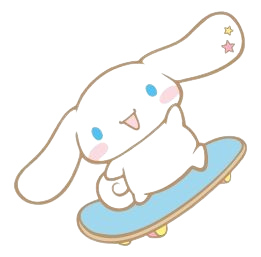

Cinnamonroll
Cinnamoroll is a character series created by Sanrio
in 2001, with character designs from Miyuki Okumura. The main
character, Cinnamoroll, is a white puppy with chubby cheeks and long
ears, blue eyes, pink cheeks, and a tail that resembles a cinnamon
roll. -cinnamonroll